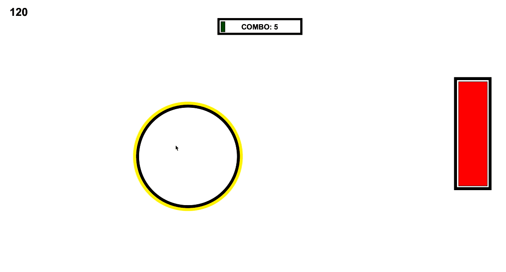

osu in python!
An auto-generated rhythm game.
Our team designed a rhythm game featuring auto-generated beatmaps, algorithmic score calculations, and accurate beat detection.
Our original idea was to create osu! with a motion-powered feature as well. In an attempt to complete the project under 24 hours, our team collborated as pairs working on the audio and camera features seperately. Utilizing PyDub and SimpleAudio, we were able to utilize a Fourier Transform to detect downbeats and audio splicing for precise synchronization with the CMU timerFired framework.
The following below is sample code for the combo bar:)
def comboBar(app, canvas):
margin = 20
center = app.width // 2
shift = 150
x0 = center - 0.75 * shift
y0 = app.height // 8 - margin
x1 = center + 0.75 * shift
y1 = app.height // 8 + margin
ratioBar = ((app.combo / 100) * (x1-x0))